소음진동기사(구) (2017-09-23 기출문제)
1과목: 소음진동개론
1. 수직보정곡선의 주파수 범위(f(Hz))가 4≤f≤8일 때, 주파수대역별 보정치의 물리량(m/s2)으로 옳은 것은?
- 2×10-5×f-1/2
- 10-5
- 1.25×10-5
- 0.125×10-5×f
(정답률: 70%)

2. 특수한 음의 영향에 관한 설명으로 옳지 않은 것은?
- 항공기 속도가 음속을 초과하면 음파가 항공기 앞으로 전파하지 못하므로 원추모양의 충격파가 뱃머리에서 물결이 퍼져나가듯 전파된다.
- 초음파음은 공기에 의해 흡수가 잘되는 편이므로 음원 근처에서 조사가 이루어져야 한다.
- 초음파음은 직진성이 크고, X선과 같이 상을 만든다.
- 20Hz보다 낮은 초저주파음은 가청주파수가 아니므로 인체가 전혀 느끼지 못한다.
(정답률: 77%)
3. 다음 주파수 대역 중 인체가 가장 민감하게 느끼는 진동(수직 및 수평) 주파수 범위는?
- 1~10Hz
- 1~2Hz
- 2~4Hz
- 20Hz 이상
(정답률: 71%)
4. 인체의 청각기관에 관한 설명으로 옳지 않은 것은?
- 음의 대소는 섬모가 받는 자극의 크기에 따라 다르며, 음의 고저는 자극을 받는 섬모의 위치에 따라 결정된다.
- 귀바퀴는 집음기의 역할을 한다.
- 난원창은 이소골의 진동을 달팽이관 중의 림프액에 전달하는 진동판의 역할을 한다.
- 외이도는 임피던스 변환기의 역할을 한다.
(정답률: 69%)
5. 다음 귀의 부분 중 소음성 난청을 주로 장애를 받는 부분은?
- 외이
- 중이
- 내이
- 대뇌청각역
(정답률: 63%)
6. 레이노드씨 현상에 관한 설명으로 옳지 않은 것은?
- 인체에 말초혈관운동의 장애로 인한 혈액순환이 방해받는 현상이다.
- 국소진동의 영향으로 나타나며 착암기 공기해머 등을 많이 사용하는 사람의 손에서 나타나는 증상이다.
- 검은색 손가락 증상이라고도 한다.
- 주위 온도가 높아지면 이러한 증상이 악화된다.
(정답률: 74%)
7. 기차역에서 기차가 지나갈 때, 기차가 역쪽으로 올 때에는 기차음이 고음으로 들리고 기차가 역을 지나친 후에는 기차음이 저음으로 들린다. 이와 같은 현상을 무엇이라고 하는가?
- Huyghens(호이겐스) 원리
- Doppler(도플러) 효과
- Masking(마스킹) 효과
- Binaural(양이) 효과
(정답률: 77%)
8. 다음 중 Snell의 법칙 표현으로 옳은 것은? (단, 매질 1에서의 입사각 및 음속은 θ1 및 C1, 매질 2에서의 굴절각 및 음속은 θ2 및 C2)
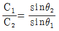
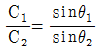
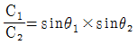
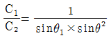
(정답률: 48%)
9. 음의 회절현상에 대한 설명 중 옳은 것은?
- 파장이 짧고, 장애물이 클수록 회절이 잘 일어난다.
- 슬릿의 구멍이 클수록 회절이 잘된다.
- 높은 주파수의 음은 저주파음보다 회절하기가 쉽다.
- 라디오의 전파가 큰 건물의 뒤쪽에서도 수신되는 현상과 관련이 있다.
(정답률: 67%)
10. 2개의 작은 음원이 있다. 각각의 음향출력 (W)의 비율이 1:25일 때 이 2개 음원의 음향파워레벨의 차이는?
- 11dB
- 14dB
- 18dB
- 21dB
(정답률: 58%)
11. 둘 또는 그 이상의 같은 성질의 파동이 동시에 어느 한 점 을 통과할 때 그 점에서의 진폭은 개개의 파동의 진폭을 합한 것과 같다. 이 원리와 거리가 먼 것은?
- 맥놀이
- 음향 임피던스
- 소멸간섭
- 보강간섭
(정답률: 69%)
12. 대기조건에 따른 공기흡음 감쇠효과에 관한 설명으로 옳은 것은?
- 습도가 낮을수록 감쇠치는 증가한다.
- 주파수가 낮을수록 감쇠치는 증가한다.
- 일반적으로 기온이 낮을수록 감쇠치는 작아진다.
- 공기의 흡음감쇠는 음원과 관측점의 거리에 거의 영향을 받지 않는다.
(정답률: 58%)
13. 자유공간에 있는 무지향성 점음원으로부터 15m 지점의 음압레벨이 75dB라면 이 음원으로부터 45m 떨어진 지점에서의 음압레벨은?
- 약 55dB
- 약 60dB
- 약 65dB
- 약 70dB
(정답률: 44%)
14. 지반을 전파하는 파에 관한 설명으로 가장거리가 먼 것은?
- S파는 거리가 2배로 되면 6dB 정도 감소한다.
- P파는 거리가 2배로 되면 6dB 정도 감소한다.
- R파는 거리가 2배로 되면 3dB 정도 감소한다.
- 표면파의 전파속도는 횡파의 40~45% 정도이다.
(정답률: 67%)
15. 다음 주파수 범위(Hz) 중 인간의 청각에서 가장 감도가 좋은 것은?
- 0~10
- 10~50
- 50~250
- 2,000~5,000
(정답률: 73%)
16. 자유음장에서 점음원으로부터 관측점까지의 거리를 2배로 하면 음압레벨은 어떻게 변화되는가?
- 1/2로 감소된다.
- 2배 증가한다.
- 3dB 감소한다.
- 6dB 감소한다.
(정답률: 67%)
17. 다음 중 음세기의 단위를 나타낸 것으로 옳은 것은?
- dB
- Pa
- N/m2
- W/m2
(정답률: 65%)
18. 청력에 관한 내용으로 옳지 않은 것은?
- 음의 대소는 음파의 진폭(음압) 크기에 따른다.
- 음의 고저는 음파의 저주파에 따라 구분된다.
- 4분법에 의한 청력손실이 옥타브밴드 중심주파수가 500~2000Hz 범위에서 10dB이상이면 난청이라 한다.
- 청력손실이란 청력이 정상인 사람의 최소 가청치와 피검자의 가청치와의 비를 dB로 나타낸 것이다.
(정답률: 59%)
19. 점음원이 자유진행파를 발생한다고 가정할 때 음원으로부터 6m 떨어진 지점의 음압레벨이 70dB이다. 이 음원의 음향파워레벨은?
- 86.6dB
- 96.6dB
- 106.6dB
- 116.6dB
(정답률: 50%)
20. 음의 크기레벨에 관한 다음 설명 중 옳지 않은 것은? (단, S는 음의 크기, LL은 음의 크기레벨)
- 음의 크기레벨은 phon으로 측정된다.
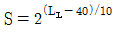
로 나타낼 수 있다.- lsone은 4000Hz 순음의 음세기레벨 40dB 음크기로 정의된다.
- 음의 크기레벨은 감각적인 음의 크기를 나타내는 양으로 같은 음압레벨이라고 주파수가 다르면 같은 크기로 감각되지 않는다.
(정답률: 62%)
2과목: 소음방지기술
21. A차음재료의 투과손실이 40dB이라면 입사음 세기는 투과음 세기의 몇 배가 되겠는가?
- 1/10000
- 1/4
- 4
- 10000
(정답률: 54%)
22. 벽체 외부로부터 확산음이 입사될 때 이 확산음의 음압레벨은 90dB이다. 실내의 흡음력은 30m2이고, 벽의 투과손실율은 30dB, 그리고 벽의 면적이20m2 이면 실내의 음압레벨(dB)은?
- 약 64dB
- 약 75dB
- 약 79dB
- 약 81dB
(정답률: 44%)
23. 흡음율을 측정하기 위한 방법으로 잔향실을 이용하는 경우가 있다. 이 잔향실에 대한 특성으로 옳은 것은?
- 벽면의 흡음율을 1에 가깝게 한다.
- 벽면으로부터 반사파를 될 수 있는 한 작게하여 확산음장을 얻도록 한다.
- 잔향실에는 실내에 충분한 확산을 얻을 수 있도록 확산판을 사용한다.
- 잔향실의 주요한 벽면은 평행이 되도록 설계하여야 하고, 8면체 대각선 길이의 비는 6~8 사이로 한다.
(정답률: 53%)
24. 감음계수에 관한 설명으로 옳은 것은?
- NRN라고도 하며 1/3옥타브 대역으로 측정한 중심파수 250, 500, 1000, 2000Hz에서의 흡음율의 기하평균치이다.
- NRN라고도 하며 1/1옥타브 대역으로 측정한 중심파수 250, 500, 1000, 2000Hz에서의 흡음율의 산술평균치이다.
- NRC라고도 하며 1/3옥타브 대역으로 측정한 중심파수 250, 500, 1000, 2000Hz에서의 흡음율의 산술평균치이다.
- NRC라고도 하며 1/1옥타브 대역으로 측정한 중심파수 250, 500, 1000, 2000Hz에서의 흡음율의 기하평균치이다.
(정답률: 73%)
25. 흡음율이 0.4인 흡음재를 사용하여 내경 40cm의 원형직관 흡음덕트를 만들었다. 이 덕트의 감쇠량이 15dB일 때 흡음덕트의 길이는 대략 얼마인가? (단, K=α-0.1 적용)
- 3m
- 4m
- 5m
- 6m
(정답률: 57%)
26. 흡음 덕트형 소음기에 대한 설명으로 옳지 않은 것은?
- 중-고파수의 음에 유효하게 사용된다.
- 흡음덕트내에서 기류가 같은 방향으로 이동할 경우 소음의 감쇠치의 정점은 고주파수측으로 이동하면서 그 크기는 낮아진다.
- 흡음덕트 최대 감음 주파수는 λ/2 <D <λ 범위에 있다.(D는 덕트의 내경)
- 음향에너지의 밀도를 희박화하고 공동단을 줄여서 소음을 제어한다.
(정답률: 40%)
27. 소음제어를 위한 자재류의 특성으로 옳지 않은 것은?
- 흡음재 : 상대적으로 경량이며 잔향음 에너지를 저감시킨다.
- 차음재 : 상대적으로 고밀도로서 음의 투과율을 저감시킨다.
- 제진재 : 상대적으로 큰 내부손실을 가진 신축성이 있는 자재로, 진동으로 판넬이 떨려 발생하는 음에너지를 저감시킨다.
- 차진재 : 탄성패드나 금속 스프링으로서 구조적 진동을 증가시켜 진동에너지를 저감시킨다.
(정답률: 67%)
28. 차음재료 선정 및 사용상 유의점으로 옳지 않은 것은?
- 차음에 영향이 아주 큰 것은 틈으로 틈이나 파손된 곳이 없도록 하여야 한다.
- 서로 다른 재료로 구성된 벽의 차음효과를 높이기 위해서는 벽체 각 구성부의 면적과 당해 벽체의SiTi의 값이 다른 자재의 시공을 검토하는 것이 좋다.
- 차음벽에서 면의 진동은 위험하므로 가진력이 큰 기계가 설치된 공장의 차음벽은 방진지지 및 방진합금의 이용이나 damping 처리 등을 검토한다.
- 콘크리트 블록을 차음벽으로 사용하는 경우에는 표면을 모르타르로 바르는 것이 좋다.
(정답률: 67%)
29. 가로 × 세로 × 높이가 각각 5m × 7m × 2m인방의 벽, 바닥 ,천장의 500Hz에서의 흡음율이 각각 0.25, 0.⑤, 0.15일 때, 500Hz 음의 잔향 시간은?
- 0.31초
- 0.59초
- 0.74초
- 0.98초
(정답률: 59%)
30. 그림과 같이 내경 6cm, 두께 2mm인 관끝 무반사관 도중에 직경1cm의 작은 구멍이 10개 뚫린 관을 내경 15cm, 길이 30cm의 공동과 조합할 때의 공명주파수는? (단, 작은 구멍의 보정길이=내관두께+구멍반지름×1.6으로 하며, 음속은 344m/s로 한다.)
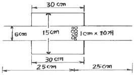
- 187Hz
- 233Hz
- 256Hz
- 278Hz
(정답률: 38%)
31. 음원(S)과 수음점(R)이 자유공간에 있는 아래와 같은 방음벽에서 A=10m, B=20m, d=25m(S-R사이)일 때 500Hz에서의 Fresnel number는? (단, 음속은 340m/sec이고, 방음벽의 길이는 충분히 길다고 가정한다.)
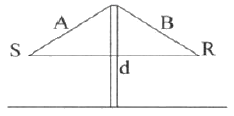
- 10.7
- 14.7
- 16.7
- 17.7
(정답률: 50%)
32. 다음 발파소음 감소대책 중 가장 거리가 먼 것은?
- 완전전색이 이루어져야 한다.
- 지발당 장약량을 감소시킨다.
- 기폭방법에서 역기폭보다 정기폭을 사용한다.
- 도폭선 사용을 피한다.
(정답률: 69%)
33. 다음 방음대책을 음원대책과 전파경로대책으로 구분할 때 주로 전파경로대책에 해당하는 것은?
- 소음기 설치
- 마찰력 감소
- 공명방지
- 방음벽 설치
(정답률: 50%)
34. 음파가 벽면에 수직입사할 때 주파수가 1000Hz 이고, 면밀도가 22kg/m2인 단일벽체의 투과 손실은?
- 34dB
- 40dB
- 44dB
- 48dB
(정답률: 65%)
35. 재료의 흡음율 측정법 중 난입사 흡음율 측정법으로 실제 현장에서 적용되고 있는 것은?
- 투과손실법
- 정재파법
- 관내법
- 잔향실법
(정답률: 62%)
36. 평균흡음율 0.04인 실내의 평균음압레벨을 85dB에서 80dB로 낮추기 위해서는 평균흡음율을 약 얼마로 해야 하는가?
- 0.⑤
- 0.13
- 0.25
- 0.31
(정답률: 40%)
37. 바닥 20m×20m, 높이 4m인 방의 잔향시간이 2초일 때, 이 방의 실정수는(m2)는?
- 115.5
- 121.3
- 131.2
- 145.5
(정답률: 50%)
38. 3m × 4m 크기의 차음벽을 두 잔향실 사이에 설치한 후, 음원실과 수음실에서 시간 및 공간 평균된 음압레벨을 측정하였더니 각각 90dB와 72dB이었다. 수음실의 흡음력을 20sabines 이라고 하면 이 차음벽의 투과 손실은? (단, 차음벽에서 충분히 떨어진 곳에서 측정)
- 15.8dB
- 13.5dB
- 11.4dB
- 10.6dB
(정답률: 24%)
39. 8mL×7mW×3mH인 실내의 바닥, 천장, 벽의 흡음율이 각각 0.1, 0.3, 0.2 일 때, 실내의 흡음력과 잔향시간으로 옳은 것은?
- 30sabines, 1.2초
- 30sabines, 0.7초
- 40sabines, 1.2초
- 40sabines, 0.7초
(정답률: 45%)
40. 음원을 밀폐상자로 씌우는 구조로 파장에 비해 작은 밀폐상자내의 저주파 음압레벨 SPL1을 구하는 공식은? (단, PWLS=음원의 파워레벨(dB), f=밀폐상자보다 파장이 큰 저주파(Hz), V=음원과 상자간의 공간체적(m3))
- SPL1=PWLS-20logf-20logV+81dB
- SPL1=PWLS+20logf-20logV+81dB
- SPL1=PWLS-40logf-20logV+81dB
- SPL1=PWLS+40logf-20logV+81dB
(정답률: 56%)
3과목: 소음진동 공정시험 기준
41. 진동레벨기록기를 사용하여 배출허용기준 중 진동을 측정할 경우 “기록지상의 지시치가 불규칙하고 대폭적으로 변할 때” 측정진동레벨로 정하는 기준은? (단, 모눈종이 상에 누적도곡선(횡축에 진동레벨, 좌측 종축에 누적소루를 , 우측종축에 백분율을 표기)을 이용하는 방법에 의한다.
- 80% 횡선이 누적도곡선과 만나는 교점에서 수선을 그어 횡축과 만나는 점의 진동레벨을 L10값으로 한다.
- 85% 횡선이 누적도곡선과 만나는 교점에서 수선을 그어 횡축과 만나는 점의 진동레벨을 L10값으로 한다.
- 90% 횡선이 누적도곡선과 만나는 교점에서 수선을 그어 횡축과 만나는 점의 진동레벨을 L10값으로 한다.
- 95% 횡선이 누적도곡선과 만나는 교점에서 수선을 그어 횡축과 만나는 점의 진동레벨을 L10값으로 한다.
(정답률: 47%)
42. 발파소음 측정자료 평가표 서식에 기재되어야 하는 사항으로 거리가 먼 것은?
- 천공자 깊이
- 폭약의 종류
- 발파횟수
- 측정기기의 부속장치
(정답률: 48%)
43. 진동픽업의 설치장소 조건으로 옳지 않은 것은?
- 수직방향 진동레벨을 측정할 수 있도록 설치한다.
- 경사 또는 요철이 없는 장소로 하고, 수평면을 충분히 확보할 수 있는 장소로 한다.
- 복잡한 반사, 회절현상이 예상되는 지점은 피한다.
- 완충물이 풍부하고, 충분히 다져서 단단히 굳은 장소로 한다.
(정답률: 71%)
44. 소음배출허용기준 측정방법 중 측정점 선정에 관한 설명으로 가장 거리가 먼 것은?
- 공장의 부지경계선 중 피해가 우려되는 장소로서 소음도가 높을 것으로 예상되는 지점을 택한다.
- 측정지점에 높이 1.5m를 초과하는 장애물이 있는 경우에는 장애물로부터 소음원 방향으로 1~3.5m 떨어진 지점을 측정점으로 한다.
- 측정지점에 있는 장애물이 방음벽일 경우에는 장애물 안쪽으로 1~3.5m 떨어진 지점 중 암영대를 측정점으로 한다.
- 측정은 지면으로부터 1.3m 높이에서 할 수 있다.
(정답률: 50%)
45. 소음계의 마이크로폰 설치 및 소음측정조건에 관한 설명으로 가장 거리가 먼 것은?
- 측정위치에 받침장치를 설치하는 것을 원칙으로 한다.
- 측정점은 일반지역의 경우 장애물이 없는 지점의 지면 위 1.2, 1.5m의 높이로 한다.
- 풍속이 2m/s미만인 상태에서는 방풍망 설치가 없어도 가능하다.
- 풍속이 3m/s를 초과할 때에는 측정하여서는 안된다.
(정답률: 73%)
46. 측정소음도가 58.6dB(A), 배경소음도가 51.2dB(A)일 경우 대상소음도를 구하기 위한 보정치(dB(A)) 절대값으로 옳은 것은?
- 0.9
- 1.4
- 1.6
- 1.9
(정답률: 69%)
47. 다음은 소음도 기록기 또는 소음계만을 사용하여 측정할 경우 등가소음도 계산방법이다. ( )안에 알맞은 것은?
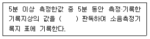
- 5초 간격으로 60회
- 10초 간격으로 30회
- 15초 간격으로 20회
- 20초 간격으로 10회
(정답률: 75%)
48. 소음계를 기본구조와 부속장치로 구분할 때, 다음 중 기본구조에 해당하는 것으로만 옳게 나열된 것은?
- 표준음 발생기, 교정장치
- 지시계기, 표준음 발생기
- 청감보정회로, 지시계기
- 교정장치, 삼각대
(정답률: 71%)
49. 다음 중 소음배출 허용기준에 사용되는 단위는?
- dB(A)
- dV(V)
- sone
- W/m2
(정답률: 73%)
50. 다음은 도로교통진동관리기준 측정방법 중 측정시간 및 측정지점수에 관한 기준이다. ( )안에 알맞은 것은?
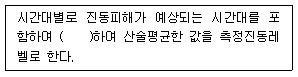
- 4개 이상의 측정지점수를 선정하여 2시간이상 간격으로 2회 이상 측정
- 4개 이상의 측정지점수를 선정하여 2시간이상 간격으로 4회 이상 측정
- 2개 이상의 측정지점수를 선정하여 4시간이상 간격으로 2회 이상 측정
- 2개 이상의 측정지점수를 선정하여 2시간이상 간격으로 4회 이상 측정
(정답률: 65%)
51. 생활소음 규제기준 측정방법상 디지털 소음자동분석계를 사용할 경우 측정소음도로 하는 기준은?
- 샘플주기를 1초 이내에서 결정하고 1분 이상 측정하여 자동 연산 · 기록한 등가소음도
- 샘플주기를 1초 이내에서 결정하고 5분 이상 측정하여 자동 연산 · 기록한 등가소음도
- 샘플주기를 5초 이내에서 결정하고 5분 이상 측정하여 자동 연산 · 기록한 등가소음도
- 샘플주기를 5초 이내에서 결정하고 10분 이상 측정하여 자동 연산 · 기록한 등가소음도
(정답률: 65%)
52. 다음 중 소음·진동공정시험기준에서 정하는 용어의 정의로 옳지 않은 것은?
- 측정소음도란 이 시험기준에서 정한 측정방법으로 측정한 소음도 맟 등가소음도 등을 말한다.
- 등가소음도란 임의의 측정시간 동안 발생한 변동소음의 총 에너지를 같은 시간 내의 정상소음의 에너지로 등가하여 얻어진 소음도를 말한다.
- 지시치란 계기나 기록지 상에서 판독한 소음도로서 피크치를 말한다.
- 충격음이란 폭발음, 타격음과 같이 극히 짧은 시간 동안에 발생하는 높은 세기의 음을 말한다.
(정답률: 63%)
53. 철도소음관리기g 측정 시 측정자료의 분석에 관한 설명이다. ( )안에 들어갈 말로 옳은 것은?
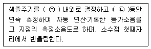
- ㉠ 1초, ㉡ 10분
- ㉠ 0.1초, ㉡ 1시간
- ㉠ 1초, ㉡ 1시간
- ㉠ 1초, ㉡ 10분
(정답률: 63%)
54. 다음은 소음·진동공정시험기준의 진동측정기기의 성능기준이다. ( )안에 가장 알맞은 것은?
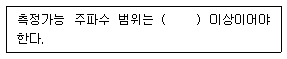
- 20 ~ 20,000Hz
- 45 ~ 120Hz
- 20 ~ 40Hz
- 1 ~ 90Hz
(정답률: 54%)
55. 다음 중 충격진동을 발생하는 작업과 가장 거리가 먼 것은?
- 단조기 작업
- 항타기에 의한 항타작업
- 폭약 발파작업
- 발전기 사용
(정답률: 53%)
56. 다음은 진동레벨계의 구조 중 레벨레인지 변환기에 관한 설명이다. ( )안에 가장 알맞은 것은?
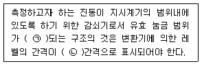
- ㉠ 30dB 초과, ㉡ 10dB
- ㉠ 30dB 이하, ㉡ 10dB
- ㉠ 50dB 초과, ㉡ 5dB
- ㉠ 50dB 이하, ㉡ 5dB
(정답률: 54%)
57. 소음·진동공정시험기준에서 규정된 용어의 정의로 옳지 않은 것은?
- 소음원 : 소음을 발생하는 기계 · 기구, 시설 및 기타 물체 또는 환경부령으로 정하는 사람의 활동을 말한다.
- 정상소음 : 시간적으로 변동하지 아니하거나 또는 변동폭이 작은 소음을 말한다.
- 반사음 : 한 매질중의 음화가 다른 매질의 에 입사한 후 진행방향을 변경하여 본래의 매질 중으로 되돌아오는 음을 말한다.
- 지발발파 : 시간차를 두지 않고 연속적으로 발파하는 것을 말한다.
(정답률: 77%)
58. 측정진동레벨이 배경진동레벨보다 3dB 미만으로 클 경우에 관한 설명으로 가장 적합한 것은?
- 측정진동레벨에 보정치 -1dB을 보정하여 대상진동레벨을 산정한다.
- 측정진동레벨에 보정치 -2dB을 보정하여 대상진동레벨을 산정한다.
- 배경진동이 대상진동보다 크므로, 재측정하여 대상진동레벨을 구한다.
- 배경진동레벨이 대상진동레벨보다 매우 작다.
(정답률: 60%)
59. 진동레벨계의 성능기준으로 옳지 않은 것은?
- 측정가능 주파수 범위는 31.5kHz~8kHz 이상이어야 한다.
- 측정가능 진동레벨 범위는 45~120dB 이상이어야 한다.
- 지시계기의 눈금오차는 0.5dB 이내이어야 한다.
- 레벨레인지 변환기가 있는 기기에 있어서 레벨레인지 변환기의 전화오차가 0.5dB 이내 이어야 한다.
(정답률: 58%)
60. 진동픽업에 관한 설명으로 가장 거리가 먼 것은?
- 가동 코일형의 동전형 진동픽업은 전자형이다.
- 동전형 진동픽업은 지르콘규산납(ZrPbSiO3)의 소결체가 주로 사용된다.
- 압전형 진동픽업은 바람의 영향을 받으므로 바람을 막을 수 있는 차폐물의 설치가 필요하다.
- 동전형 진동픽업을 대형전기기기 등에 설치할 때는 전자장의 영향을 받기 쉬우므로 특히 주의가 필요하다.
(정답률: 53%)
4과목: 진동방지기술
61. 중량 W=28.5N, 점성감쇠계수 Ce=0.⑤5N·s/cm, 스프링정수 L=0.468N/cm일 때, 이계의 감쇠비는?
- 0.21
- 0.24
- 0.32
- 0.39
(정답률: 54%)
62. 자동차진동 중 관한 설명으로 가장 거리가 먼 것은?
- 차량이 불균일한 노면위를 정상속도로 주행하는 상태에서 엔진이 부정연소하여 후륜구동차량에서 격렬한 횡진동을 수반하는 것을 말한다.
- 진동은 약 90~150Hz 정도의 주파수 범위에서 발생되며, 직렬 4기통 엔진을 탑재한 차량에서 심각하게 발생한다.
- 대책의 일환으로 엔진의 가진력을 줄이기 위해서는 미쓰비시, 란체스터 형과 같은 카운터샤프트를 적용하여 2차 모멘트를 저감시킨다.
- 동흡진기를 적용하여 배기계와 구동계의 진동모드를 제어하는 것도 효과적이다.
(정답률: 43%)
63. 각진동수가 120rpm인 조화운동의 주기는?
- 0.5sec
- 1sec
- 2sec
- 3.14sec
(정답률: 64%)
64. 진동에서 질점의 변위가 다음 식으로 표시될 때 이 운동의 위상각 Φ를 옳게 표시한 것은?
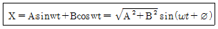
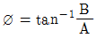
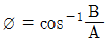
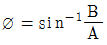
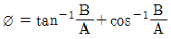
(정답률: 45%)
65. 어떤 기계를 방진고무 위에 설치할 때 정적처짐량이 2mm이었다. 이 기계에서 발생하는 가진력의 각진동수가 ω=210rad/sec일 때, 진동전달율은 얼마가 되는가? (단, 감쇠의 영향을 무시한다.)
- 0.⑤
- 0.0785
- 0.1
- 0.125
(정답률: 69%)
66. 그림의 진동계가 강제 진동을 하고 있으며, 변위진폭이 X일 때 기초에 전달되는 최대 힘의 크기는? (단, F(t) = fosinωt이다.)
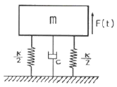
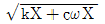
- kX+cwX
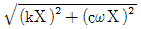
- kX2+cwX2
(정답률: 67%)
67. 다음은 감쇠(damping)가 계에서 갖는 기능을 설명한 것이다. ( )안에 들어갈 말로 옳은 것은?
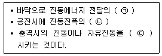
- ㉠ 증가, ㉡ 증가, ㉢ 증가
- ㉠ 감소, ㉡ 감소, ㉢ 증가
- ㉠ 증가, ㉡ 증가, ㉢ 감소
- ㉠ 감소, ㉡ 감소, ㉢ 감소
(정답률: 65%)
68.
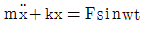
의 운동방정식을 만족시키는 진동이 일어나고 있을 때 고유 각진동수는?- k∙m
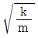
- k/m
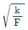
(정답률: 78%)
69. 감쇠 고유진동을 하는 계에서 감쇠 고유진동수는 20Hz이고, 이 진동계의 비감쇠 고유진동수는 30Hz일 때 감쇠비는?
- √3/2
- √5/2
- √3/2
- √5/3
(정답률: 45%)
70. 그림과 같이 스프링 K1, K2, K3를 직렬로 연결했을 때 등가스프링 정수 Ke는?
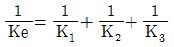
- Ke=K1+K2+K3
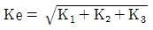
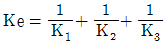
(정답률: 54%)
71. 금속스프링에 관한 설명으로 가장 거리가 먼 것은?
- 서징의 영향을 제거하기 위해 코일스프링의 양단에 그 스프링정수의 10배 정도보다 작은 스프링정수를 가진 방진고무를 직렬로 삽입하는 것이 좋다.
- 코일스프링을 제외하고 2축 또는 3축 방향의 스프링을 1개의 스프링으로 겸하게 하기가 곤란한 명이 있다.
- 일반적으로 부착이 용이하고, 내구성이 좋으며, 보수가 필요없는 경우가 많다.
- 극단적으로 낮은 스프링정수로 했을 때도 지지장치를 소형, 경량으로 하기가 용이하다.
(정답률: 30%)
72. 다음 중 진동 절연재료로써 특성임피던스(Z)가 가장 낮은 것은?
- 고무
- 콘크리트
- 알루미늄
- 철
(정답률: 74%)
73. 어떤 진동계에 F=fosinwt의 가진력이 작용하였더니 변위가 x=Xsin(wt-ø)로 표시되었다. 이 대 계가 1사이클당 한 일은?
- πfoXcosø
- 2πfoXcosø
- πfoXsinø
- 2πfoXcosø
(정답률: 47%)
74. 방진재료로 사용되는 금속 스프링의 장점으로 거리가 먼 것은?
- 고주파 차진에 매우 효과적이다.
- 내고온, 저온 및 기타의 내노화성 등에 우수하여 넓은 환경조건에서 안정된 특성의 유지가 가능하다.
- 자동차의 현가스프링에 이용되는 중판스프링과 같이 스프링장치에 구조부분의 일부의 역할을 겸할 수 있다.
- 최대변위가 허용된다.
(정답률: 42%)
75. 방진고무의 특징에 대한 설명으로 옳지 않은 것은?
- 고무자체의 내부마찰에 의해 저항이 발생하기 때문에 고주파 진동의 차진에는 사용할 수 없다.
- 형상의 선택이 비교적 자유롭다.
- 공기 중의 O3에 의해 산화된다.
- 내부마찰에 의한 발열 때문에 열화되고, 내유 및 내열성이 약하다.
(정답률: 73%)
76. 다음 중 감쇠에 대한 설명으로 옳지 않은 것은?
- 감쇠는 계의 운동이나 위치에너지의 일부를 다른 형태의 에너지(열 혹은 음향에너지)로 변환시켜 물체의 운동을 감소시킨다.
- 건마찰감쇠는 윤활이 되지 않은 두 면 사이에 상대운동이 있을 때 물체의 운동방향과 반대방향으로 일정한 크기로 발생하는 저항력과 관련된다.
- 점성감쇠는 물체의 속도에 비례하는 크기의 저항력이 속도 반대방향으로 작용하는 경우이다.
- 구조감쇠는 쿨롱감쇠라고도 하며, 구조물의 강성력으로 인해 에너지가 감소하는 경우를 말한다.
(정답률: 40%)
77. 전달력이 항상 외력보다 작아 차진이 유효한 영역은? (단, f : 강제진동수, fn : 고유진동수)
- f/fn = 1
- f/fn < √2
- f/fn = √2
- f/fn > √2
(정답률: 74%)
78. 회전원판의 중심에서 15m 떨어진 지점에 35g의 불균형 질량이 있다. 반대편에 100g의 평형추를 붙인다면 어느 지점에 위치하는 것이 가장 적합한가?
- 2.5m
- 5.25m
- 7.5m
- 9.25m
(정답률: 54%)
79. 방진대책을 발생원, 전파경로, 수진측 대책으로 구분할 때, 다음 중 전파경로 대책에 해당하는 것은?
- 가진력을 감쇠시킨다.
- 동적 흡진한다.
- 수진점 근처에 방진구를 판다.
- 수진측의 강성을 변경시킨다.
(정답률: 65%)
80. 다음 중 방진 시 고려사항으로 옳지 않은 것은?
- 강제진동수가 고유진동수에 비해 아주 작을 때, 스프링 정수를 크게 한다.
- 강제진동수가 고유진동수와 거의 같을 때, 감쇠비가 작은 방진재를 사용하거나 dash pot등은 제거한다.
- 강제진동수가 고유진동수에 비해 아주 클 때, 기계의 질량을 크게 한다.
- 가진력의 주파수가 고유진동수의 0.8~1.4배정도일 때는 공진이 커지므로 이 영역은 가능한 피한다.
(정답률: 62%)
5과목: 소음진동 관계 법규
81. 소음진동관리법상 환경부장관이나 시·도지사 측정망 설치계획을 결정·고시하면 다음의 허가를 받은 것으로 보는데, 다음 중 이에 해당되지 않는 것은?
- 건축법에 따른 건축물의 건축 허가
- 하천법에 따른 하천공사 시행의 허가
- 도로법에 따른 도로점용의 허가
- 공유수면관리법에 따른 공유수면의 점용·사용허가
(정답률: 58%)
82. 소음진동관리법규상 소음·진동배출시설 설치허가 신청 시 구비서류로 거리가 먼 것은?
- 방지시설 배치도
- 방지시설 설치명세서와 그 도면
- 방진시설의 의무를 면제받으려는 경우에는 면제를 인정할 수 있는 서류
- 사업장 법인 등기부등본
(정답률: 44%)
83. 환경정책기본법상 환경부장관은 확정된 국가환경종합계획의 종합적·체계적 추진을 위하여 몇 년마다 환경보전증기종합계획을 수립하여야 하는가?
- 3년
- 5년
- 7년
- 10년
(정답률: 50%)
84. 수음진동관리법규상 옥외에 설치한 확성기의 생활소음 규제기준으로 옳은 것은? (단, 주거지역이며, 시간대는 22:00~⑤:00 이다.)
- 60dB(A) 이하
- 65dB(A) 이하
- 70dB(A) 이하
- 80dB(A) 이하
(정답률: 69%)
85. 소음진동관리 법규상 소음방지시설에 포함되지 않는 것은?
- 소음기
- 방음림 및 방음언덕
- 방진구시설
- 방음터널시설
(정답률: 60%)
86. 다음은 소음진동관리법령상 항공기 소음의 한도기준에 관한 설명이다. ( )안에 알맞은 것은?
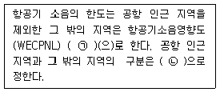
- ㉠ 90, ㉡ 국토교통부령
- ㉠ 75, ㉡ 국토교통부령
- ㉠ 90, ㉡ 환경부령
- ㉠ 75, ㉡ 환경부령
(정답률: 56%)
87. 환경정책기본법상 이 법에서 사용하는 용어의 뜻으로 옳지 않은 것은?
- 환경용량이란 일정한 지역에서 환경오염 또는 환경훼손에 대하여 환경이 스스로 수용, 정화 및 복원하여 환경의 질을 유지할 수 있는 한계를 말한다.
- 자연환경이란 지하·지표 및 지상의 모든 생물을 포함하고, 비생물적인 것은 제외한 자연의 상태를 말한다.
- 생활환경이란 대기, 물, 토양, 폐기물, 소음·진동, 악취, 일조, 인공조면 등 사람의 일상생활과 관계되는 환경을 말한다.
- 환경오염이란 사업활동 및 그 밖의 사람의 활동에 의하여 발생하는 대기오염, 수질오염, 토양오염, 해양오염, 방사능오염, 소음·진동, 악취, 일조 방해, 인공조명에 의한 빛공해 등으로서 사람의 건강이나 환경에 피해를 주는 상태를 말한다.
(정답률: 71%)
88. 소음진동관리법규상 총배기량이 175cc를 초과하는 아륜4동화의 제작차 배기소음 허용 기준은? (단, 2006년 1월 1일 이후에 제작되는 자동차 기준)
- 100dB(A) 이하
- 102dB(A) 이하
- 1⑤dB(A) 이하
- 110dB(A) 이하
(정답률: 8%)
89. 소음진동관리법규상 공사장 방음시설 설치 기준으로 옳지 않은 것은?
- 방음벽시설 전후의 소음도 차이(삽입손실)는 최소 7dB 이상 되어야 하며, 높이는 3m 이상 되어야 한다.
- 공사장 인접지역에 고층건물 등이 위치하고 있어, 방음벽시설로 인한 음의 반사피해가 우려되는 경우에는 흡음형 방음벽시설을 설치하여야 한다.
- 삽입손실 측정을 위한 측정지점 (음원 위치, 수음자 위치)은 음원으로부터 3m 이상 떨어진 노면 위 1.0m 지점으로 하고, 방음벽시설로부터 2m 이상 떨어져야 한다.
- 방음벽시설의 기초부와 방음판·지주 사이에 틈새가 없도록 하여 음의 누출을 방지하여야 한다.
(정답률: 63%)
90. 소음진동관리법규상 철도 진동의 관리기준(한도)은? (단, 야간(22:00~06:00), 국토의 계획 및 이용에 관한 법률상 주거지역 기준)
- 50dB(V)
- 55dB(V)
- 60dB(V)
- 65dB(V)
(정답률: 47%)
91. 소음진동관리법규상 시·도지사 등은 배출허용기준 준수 확인 여부를 위해 배출시설과 방지시설의 가동상태를 점검할 수 있는데, 다음 중 점검을 위해 소음·진동검사를 의뢰할 수 있는 기관과 거리가 먼 것은?
- 보건환경연구원
- 유역환경청
- 환경과학시험원
- 국립환경과학원
(정답률: 59%)
92. 소음진동관리법상 용어의 정의로 옳지 않은 것은?
- “소음(音)”이란 기계·기구·시설, 그 밖의 물체의 사용 또는 공동주택(주택법에 따른 공동주택) 등 환경부령으로 정하는 장소에서 사람의 활동으로 인하여 발생하는 강한 소리를 말한다.
- “소음·진동방지시설”이란 소음·진동배출시설로부터 배출되는 소음·진동을 없애거나 줄이는 시설로서 환경부령으로 정하는 것을 말한다.
- “소음발생건설기계”안 건설공사에 사용하는 기계 중 소음이 발생하는 기계로서 환경부령으로 정하는 것을 말한다.
- “교통기관”이란 기차·자동차·전차·도로 및 선박 등을 말한다. 다만, 항공기와 철도는 제외한다.
(정답률: 74%)
93. 소음진동관리 법규상 자동차제작자의 권리·의무의 승계신고를 하려는 자는 그 신고 사유가 발생한 날부터 최대 며칠 이내에 인증서 원본과 그 승계 사실을 증명하는 서류 등을 환경부장관에게 제출하여야 하는가?
- 10일 이내
- 15일 이내
- 30일 이내
- 60일 이내
(정답률: 42%)
94. 환경정책기본법상 국가환경종합계획에 반드시 포함되어야 하는 사항으로 가장 거리가 먼 것은?
- 인구·산업·경제·토지 및 해양의 이용 등 환경변화 여건에 관한 사항
- 환경오염원·환경오염도 및 오염물질 배출량의 예측과 환경오염 및 환경훼손으로 인한 환경의 질(質)의 변화전망
- 자연환경 오염피해 구제방법
- 환경보전 목표의 설정과 이의 달성을 위한 국토환경 보전에 관한 사항의 단계별 대책 및 사업계획
(정답률: 54%)
95. 다음은 소음진동관리법규상 측정망설치계획의 고시사항이다. ( )안에 가장 적합한 것은?
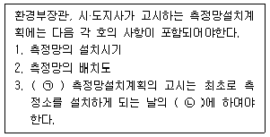
- ㉠ 측정소를 설치할 토지나 건축물의 위치 및 면적, ㉡ 6개월 이전
- ㉠ 측정소를 설치할 토지나 건축물의 위치 및 면적, ㉡ 3개월 이전
- ㉠ 측정오염물질항목, ㉡ 6개월 이전
- ㉠ 측정오염물질항목, ㉡ 3개월 이전
(정답률: 57%)
96. 소음진동관리법규상 소음·진동배출시설 설치사업자가 배출허용기준을 초과한 경우 1차~3차까지의 행정처분기준으로 옳은 것은? (단, 예외사항 제외)
- 1차: 개선명령, 2차: 개선명령, 3차: 개선명령
- 1차: 조업정지, 2차: 허가취소, 3차: 폐쇄
- 1차: 개선명령, 2차: 조업정지, 3차: 허가취소
- 1차: 조업정지, 2차: 경고, 3차: 허가취소
(정답률: 56%)
97. 소음진동관리법 제작차 소음허용기준에 맞지 아니하게 자동차를 제작한 자에 대한 벌칙 기준으로 옳은 것은?
- 300만원 이하의 과태료
- 6개월 이하의 징역 또는 500만원 이하의 벌금
- 1년 이하의 징역 또는 1천만원 이하의 벌금
- 3년 이하의 징역 또는 3천만원 이하의 벌금
(정답률: 54%)
98. 소음진동관리법규상 중형 화물자동차의 규모기준으로 옳은 것은? (단, 2015년 12월 28일부터 제작되는 자동차기준)
- 엔진배기량 3,000cc 이상 및 차량 총중량 5톤 초과 10톤 이하
- 엔진배기량 2,500cc 이상 및 차량 총중량 5톤 초과 7.5톤 이하
- 엔진배기량 2,000cc 이상 및 차량 총중량 3톤 초과 5톤 이하
- 엔진배기량 1,000cc 이상 및 차량 총중량 2톤 초과 3.5톤 이하
(정답률: 47%)
99. 소음진동관리법규상 자동차 사용정지표지에 관한 기준으로 옳지 않은 것은?
- 이 표는 자동차의 전면유리창 오른쪽 상단에 붙인다.
- 문자는 검은색으로 바탕색은 노란색이다.
- 자동차 사용정지명령을 받은 자동차를 사용정지기간 중에 사용하는 경우에는 소음진동관리법에 따라 1년 이하의 징역 또는 1천만원 이하의 벌금에 처한다.
- 사용정지표지의 제거는 사용정지기간이 지난 후에 담당공무원이 제거하거나 담당공무원의 확인을 받아 제거하여야 한다.
(정답률: 44%)
100. 소음진동관리법규상 소음발생건설기계로 분류되지 않는 것은?
- 콘크리트 절단기
- 다짐기계
- 브레이커(휴대용을 포함하며, 중량 5톤 이하로 한정한다)
- 콘크리트 펌프
(정답률: 57%)